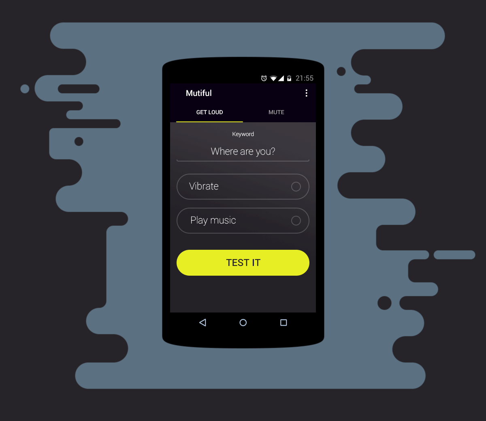
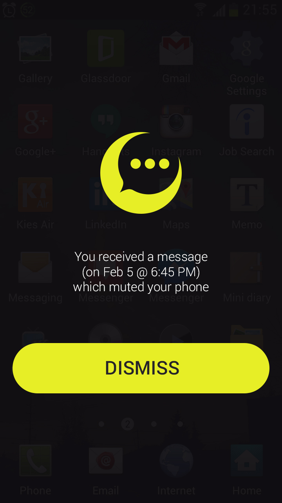
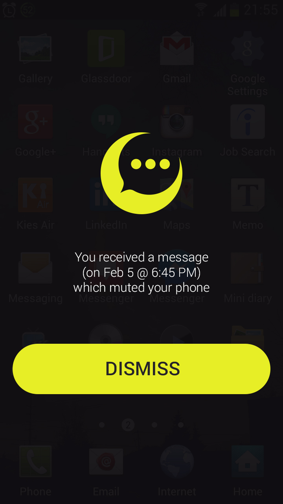
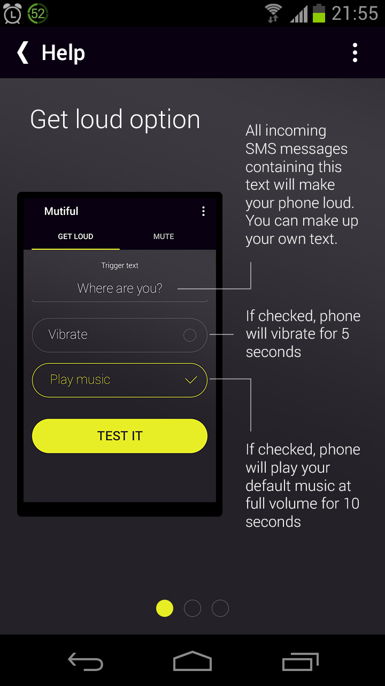
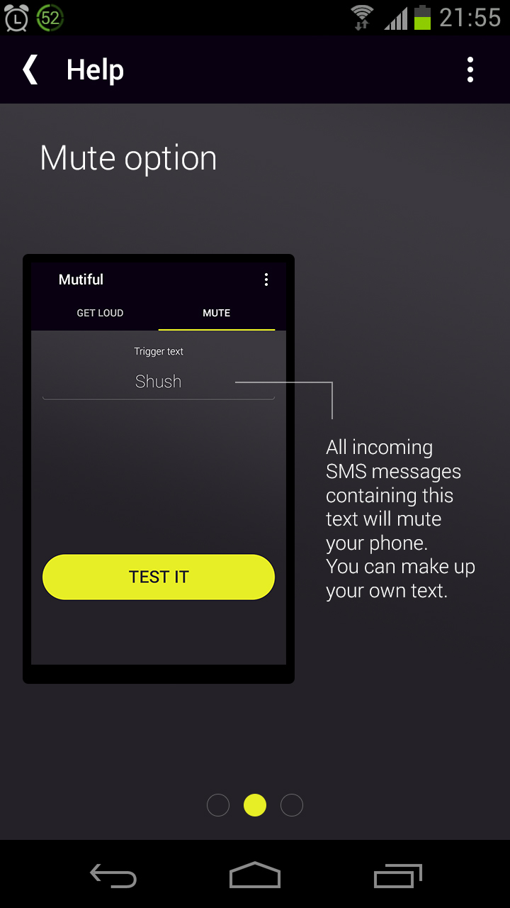
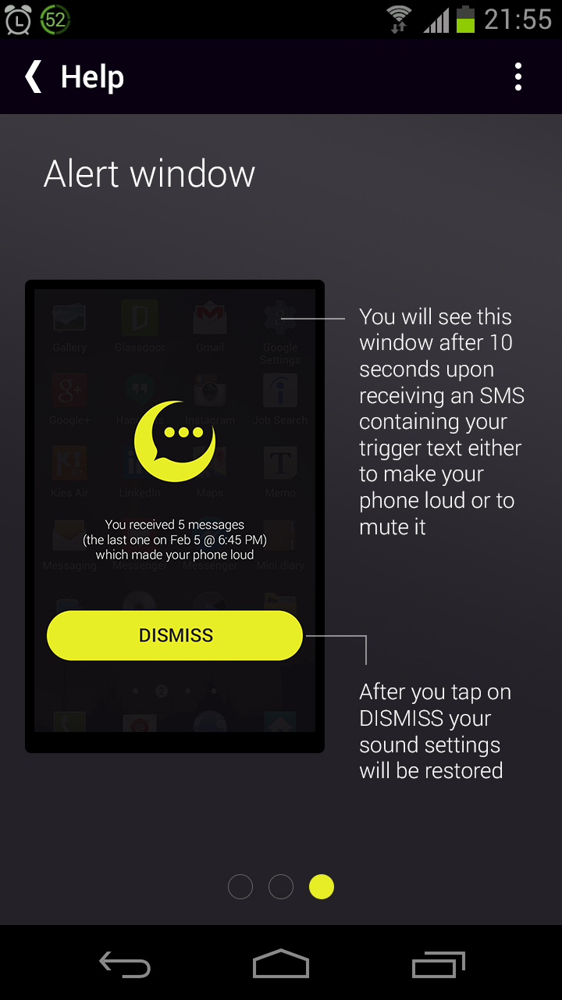
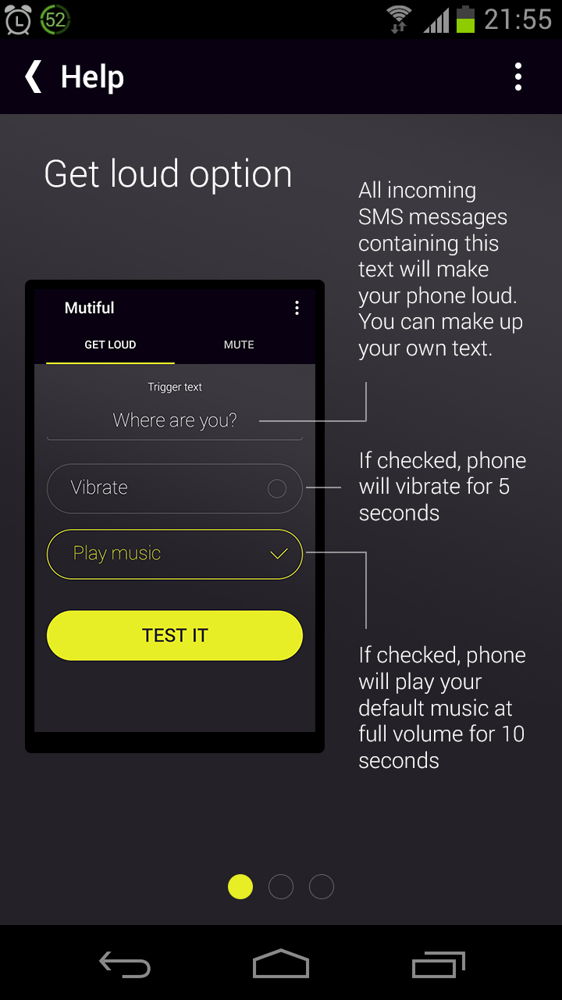
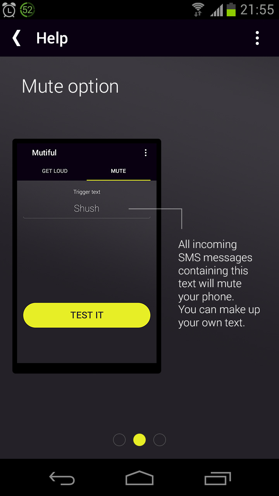
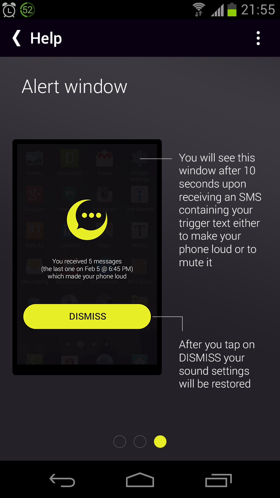

Замолчатель - это простой способ найти свой телефон или телефон того, кто вам дорог
Основные функции:
- Выключить тихий режим телефона с помощью СМС
- Выключить звук телефона с помощью СМС
Примеры СМС сообщений
- Ты где пропал?
- Подними трубку
- Выключи громкость
- Цыц!
- Включи громкость телефона
Как это работает?
Вы теряли телефон и не могли на него позвонить, потому что он был в беззвучном режиме?
Вы не могли дозвониться до вашей жены, мужа или друга, потому что они забыли выключить беззвучный режим? Или вы оставили телефон в офисе и не хотите, чтобы он издавал звуки? Ваш ребёнок пошёл в школу с телефоном, но забыл выключить звонки?
Значит, это приложение как раз для вас!
Вы просто отправляете на телефон (на котором установлено это приложение) СМС с определённым текстом, например, "ты куда пропал?", и телефон автоматически выйдет из беззвучного режима и начнёт проигрывать мелодию звонка.
Вы сможете быстро дозвониться до близкого вам человека.
Приложение позволит вам выбрать тип оповещения и ключевые слова в СМС.
FAQ:
Частые вопросы и ответы:
Вопрос: Достаточно ли установить программу только на мой телефон?
Ответ: Да, если вы хотите найти свой телефон. Если вы хотите дозвониться до жены, мужа или друга/подруги, то программа должна быть установлена и на их телефоны.
Вопрос: Вы читаете все мои СМС?
Ответ: Нет, это делает ваш телефон. Он проверяет входящее СМС–сообщение на содержание ключевых слов.
Вопрос: А мои личные данные?
Ответ: Нет! Всё, что делает программа – это ждёт ключевую фразу во входящем СМС и включает громкость!
Вопрос: Вы отправляете мои СМС в интернет?
Ответ: Нет! Приложение не запрашивает разрешение на пользование Интернетом, следовательно, Android будет блокировать всякую попытку использовать его.
Вопрос: Эта программа может отправлять СМС и тратить мои деньги?
Ответ: Нет! Для отправки СМС необходимы дополнительные разрешения Android, которые программа не запрашивает.
Вопрос: Оно постоянно жужжит и вибрирует на все СМС!!!
Ответ: Попробуйте изменить ключевые слова так, чтобы они были достаточно редкими и не встречались во входящих СМС. Например, "телефон, найдись!" или "включите, пожалуйста, громкость" и т.д.
Вопрос: Входящее СМС должно быть точь–в–точь как ключевая фраза?
Ответ: Необязательно, например, для СМС "о, телефон, ты где? включи мне громкость поскорее" сработает для ключевых фраз: "ты где?" или "ВКЛЮЧИ МНЕ ГРОМКОСТЬ" или "О, Телефон, Ты Где"
Вопрос: Мой телефон стал жутко тормозить!
Ответ: И эта программа не может служить тому причиной. Она выполняется только в момент получения СМС, и, если ключевой фразы не найдено, прекращает свою работу.
Взаимодействие

UI/UX


 

 





Отзывы
- Отличное приложение,а главное простое в использовании
- Отличный и полезный софт Спасибо ребята!
- Круть спс
- Отличное приложение, спасибо!
- Отлично Спасибо, полезное приложение
- Спасибо, дорогой друг, за прекрасную пепяку.
- Поставил дочке, теперь она будет чуть реже получать выговоры за то, что пропарила трубу в квартире, отключив звук.
Это гениально. Идея прям как а Американском Папаше:) Для меня приложение довольно полезное, т.к. телефон почти всегда на беззвучном - режиме:) Аффтор гений:3
- Отлично. У меня улучшилось зрение, кожа стала чище и морщины расправились!
- Это прекрасно! Джва года ждал такую программу! Спасибо!
- Прекрасно! Спасибо!
- Спасибо! Спасибо большое! С лепроприветом!
- +реально работает жена останется в живых :)
Fantastic app! Beautiful design, works great, and is a lot of fun if you know someone else's code ;) ! Watch out though, with great power - comes great responsibility!
Ссылки
Упоминания о программе в интернете: